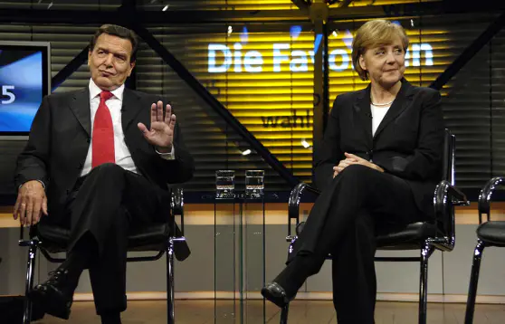
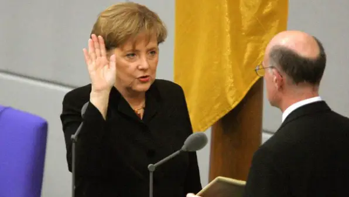
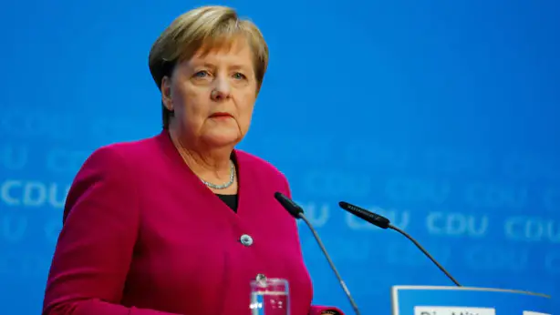

Angela Merkel est née le 17 juillet 1954 à Hambourg en Allemagne. Son vrai nom de famille est Kasner,
le nom de Merkel est venu de son premier mari Ulrich Merkel. Elle se marie avec lui en 1977
et elle est restée avec lui 5 ans et divorce donc en 1982 sans avoir d’enfant.
Elle décide malgré tout de garder le nom de Merkel. Puis elle se mariera de nouveau en 1998 avec Joachim Sauer avec lequel
elle n’aura aucun enfant non plus.
Elle s’est fait élire 3 fois de suite par le parlement d’Allemagne. Avant d’atteindre cette position, elle a été ministre fédérale des femmes et de la jeunesse de 1991 à 1994.
Avant de se voir confier le ministère fédéral de l'Environnement, de la Protection de la nature et de la Sécurité nucléaire les 4 années suivantes.
Pendant 2 ans elle n’occupera aucun poste si important. Mais en 2000 elle devient la première femme de la CDU (Christlich Demokratische Union Deutschlands).
En 2005 elle gagne les élections et devient la premier femme chancelière de tout l’histoire de l’Allemagne.
merkel devient en 2000 la première femme membre de CDU.
La chancelière Angela Merkel.
Son début en tant que chancelante n’était pas bien vu par tout le monde car d’après la presse Allemande.
Angela Merkel était sous pression et ce en raison du refus de Gerhard Schröder (chancelier fédérale d’Allemagne. Entre 1998 à 2005).
Pour sa candidature aux élections en tant que chancelière. En effet Au Bundestag (parlement d’Allemagne),
le parti
SPD
dispose de 4 places supplémentaires que celui d’Angela Merkel. Et peut facilement refuser le passage de celle-ci au poste de chancelière.

merkel avec Gerhard Schröder.
Après 5 semaines de négociation. Le
SPD
et le CDUunie au CSU
concluent un accord dans lequel Angela Merkel peut se présenter aux élections fédérales d’Allemagne
(Bundeskanzlerin).Elle est élue par le Bundestag le 22 novembre 2005 avec 397 voix sur 611 (64,9%).
Angela Merkel devient à l’âge de 51 ans la plus jeune personnalité politique à atteindre le poste de chancelière.
Et aussi la première femme. Dans cette période, Angela Merkel a montré qu’elle était digne de cette place.
Elle a beaucoup apporté à l’Allemagne et a fait face à la
crise financière en 2008
ou encore la crise de Covid en 2020.

Angela merkel entrain de prêter serment en 2005.
A la fin de son premier mandat, le bilan étant correct. Elle a été élue 4 fois d’affilé et cette dernière fois car elle a accepté d’accueillir des réfugiés syriens.
Mais ses opposants n’ont pas apprécié ce geste. Ils ont alors commencé à faire des manifestations. Pour diminuer les tensions, Angela Merkel a annoncé que ce quatrième
mandat serait son dernier.

jour ou angela merkel annonce son depart.
Une figure de féminisme
Angela Merkel est considérée comme une figure emblématique de féminisme. Car c'est femme qu’a fait de la politique et elle a montré que même une femme peut réussir
dans la politique.
avec les autres figures importantes de la politique en Europe.